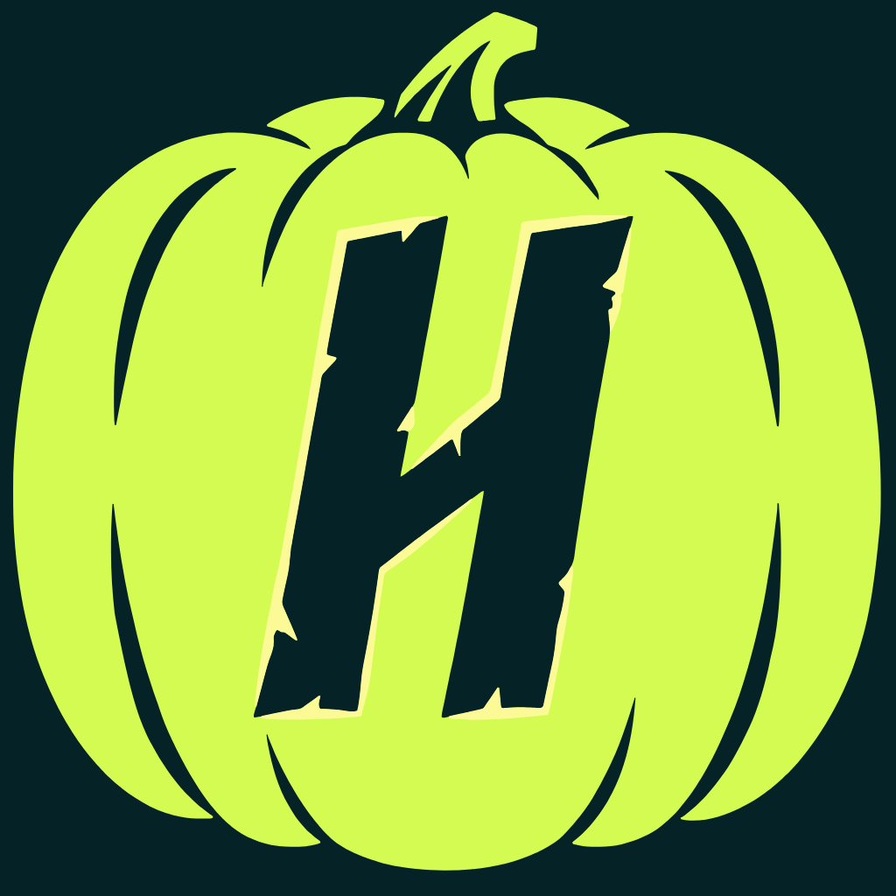

Handshake AI Skills Studio · Halloween logo challenge entryHandshake's H, carved into a lime pumpkin in the real brand shape and colours. It's built as an app icon, with a 3D easter egg: tap the icon and it carves itself.
The 3D pumpkin runs in your browser: drag to spin it, then take the shot. Works on phones too.
The main entry: a flat icon you could ship as Handshake's Halloween app icon.
Everything in one place.